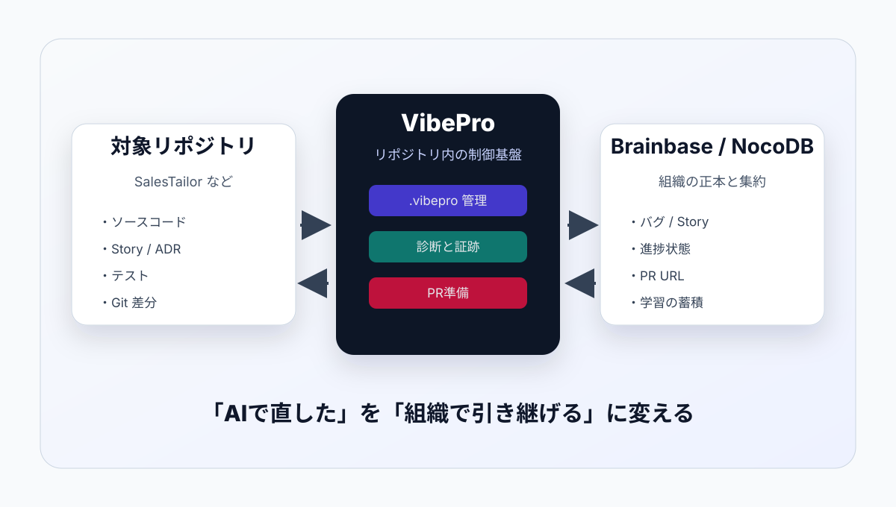
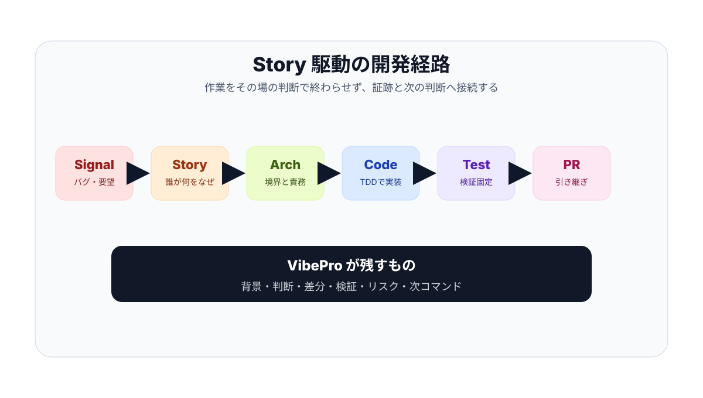
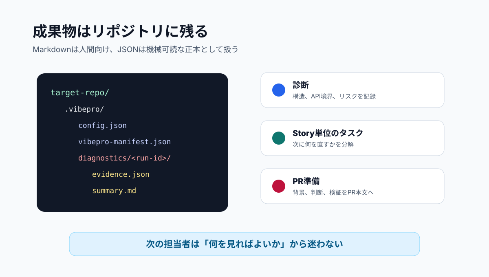
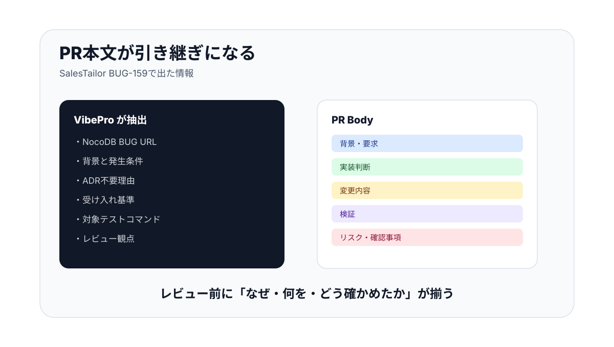

VibePro
開発を引き継げる状態にするCLI
バグ修正、診断、Story駆動開発、PR準備を、対象リポジトリ内の証跡として残すための社内標準ツールです。

VibeProは、AI実装の前後を管理する制御基盤
AIがコードを書くこと自体ではなく、何を直すべきか、なぜその修正なのか、どう検証したのかを残すことに価値があります。
AI開発で起きやすい問題
なぜその修正をしたのか、どの要求と結びつくのかがPRだけでは追いにくい。
診断結果が次のStoryや修正タスクにつながらず、毎回調査をやり直す。
差分は読めても、背景、判断、検証、リスクがレビュアーに伝わらない。
SignalからPRまでを一本の流れにする

.vibepro と一時成果物を使い分ける
初期化済みリポジトリでは `.vibepro/` に状態を残します。PR用のクリーンブランチでは、未初期化なら一時ディレクトリに出して、対象リポジトリを汚しません。

まず覚えるコマンド
# まず全体診断だけ回す。Story IDがなくてもよい vibepro check all /path/to/repo --base <base-branch> # 特定の機能・不具合に紐づける場合はStoryを作る vibepro init /path/to/repo \ --story-id story-local-hardening \ --title "公開前診断" # Story単位で診断する vibepro check all /path/to/repo \ --story-id story-local-hardening --base <base-branch> # PR前に差分とPR本文を準備する vibepro pr prepare /path/to/repo \ --base <base-branch> --story-id story-local-hardening

レビュー前に必要な文脈をそろえる
`pr prepare` は単なる差分一覧ではありません。Story文書、ADR判断、変更ファイル、テスト差分からPR本文を組み立てます。
BUG-159: 複数削除の管理者権限修正
NocoDBのBUG-159から、管理者の複数選択削除だけ失敗し得ることを確認。
Story `STR-022` を作り、ADR不要理由と受け入れ基準を明文化。
APIテストでADMIN/USERの権限差をRedにしてから、複数削除APIを修正。
`pr prepare` が背景、要求URL、検証コマンドを含むPR本文を生成。
社内ではこの3パターンから始める
NocoDBのバグからStoryを作り、実装、検証、PR本文生成まで通す。
Graphifyと診断を使い、API境界、秘密情報、構造リスクを確認する。
PR準備の成果物を見れば、背景、判断、テスト、リスクが分かる状態にする。
まず守ること
Storyなしで大きな実装に入らない。少なくとも背景、受け入れ基準、ADR要否を残す。
PR前に `vibepro pr prepare` を実行し、差分範囲とPR本文を確認する。
クリーンブランチでは未初期化のまま `pr prepare` してよい。VibeProが一時成果物に逃がす。
検証コマンドを実行し、NocoDBにはPR URLと進捗コメントを戻す。
社内利用で磨いてから公開へ
まずはSalesTailor、Brainbase、VibePro自身で使い、オンボーディング、エラー表示、ドキュメントを社内で固めます。